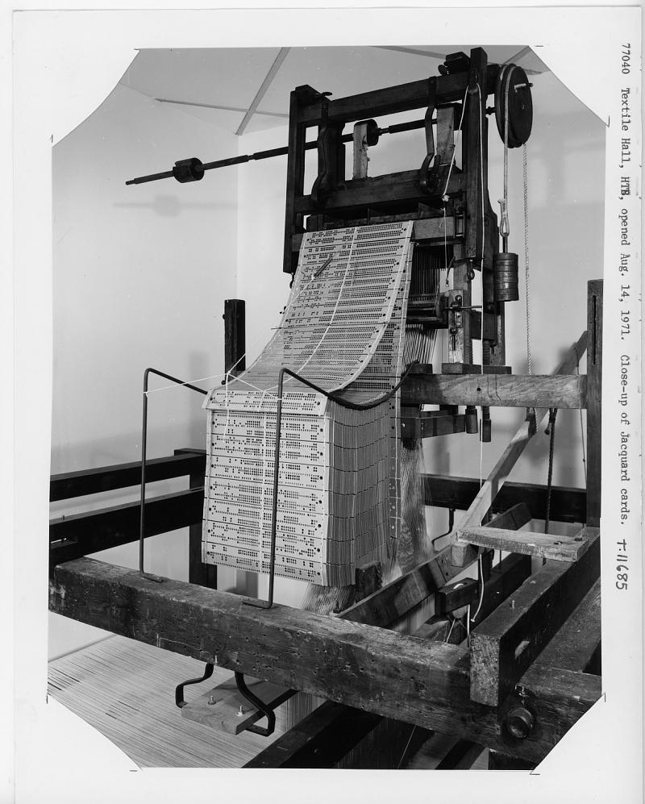
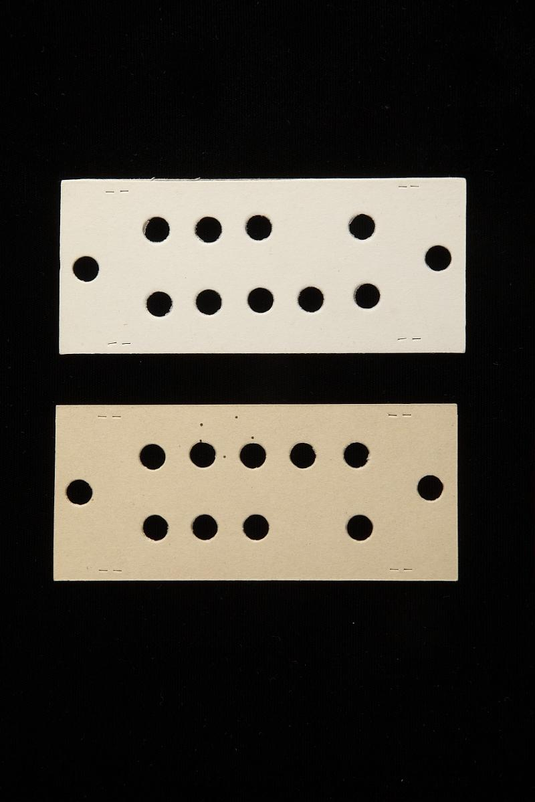
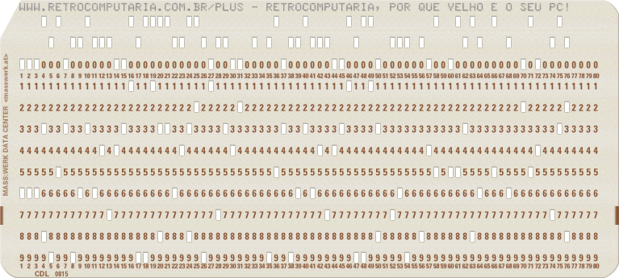
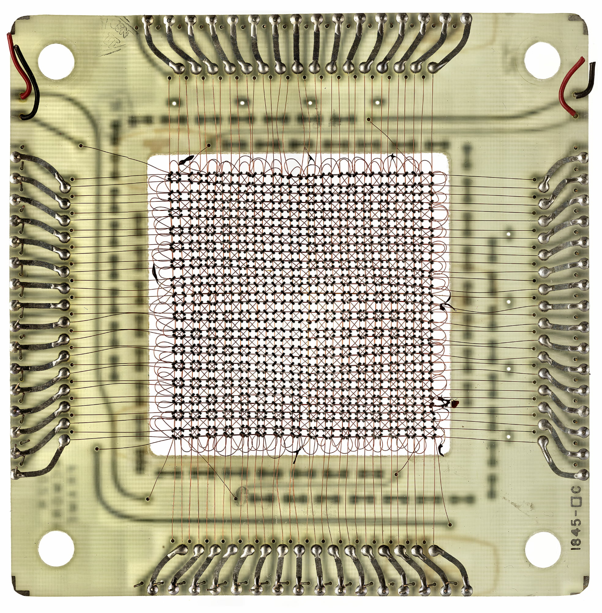
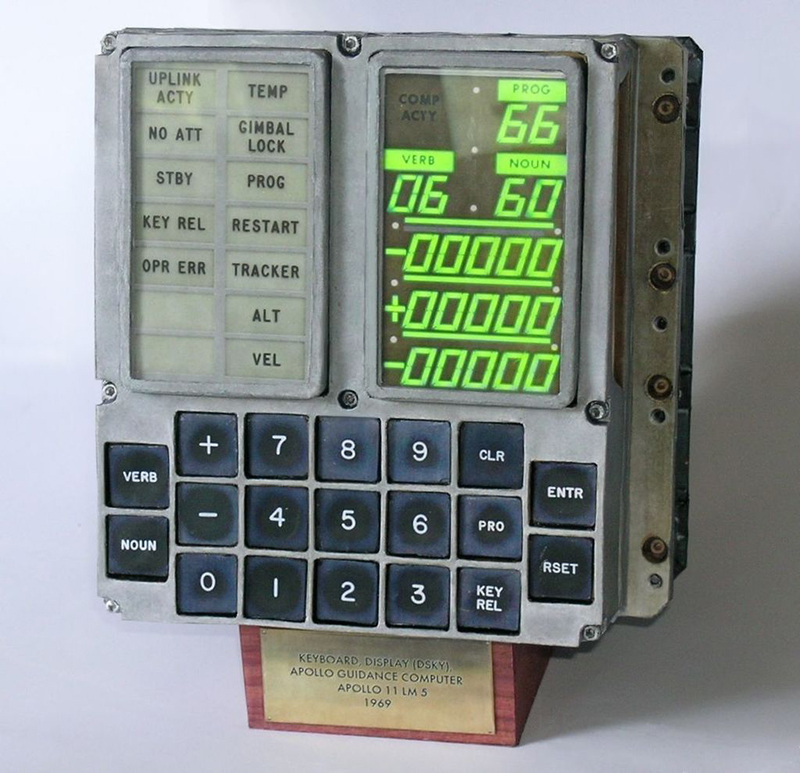
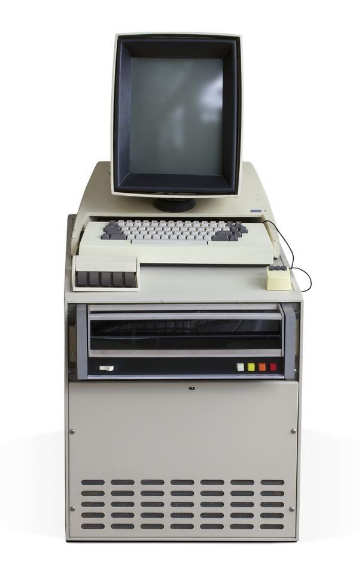
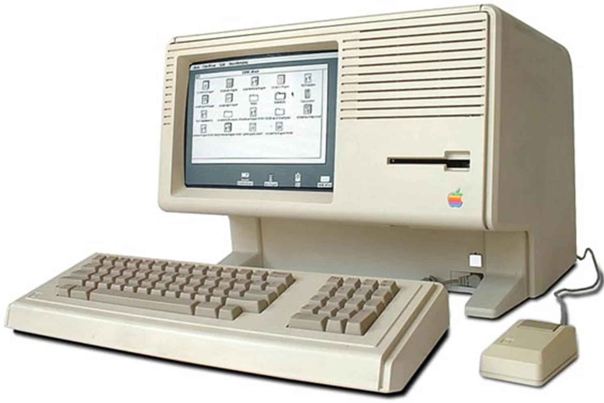
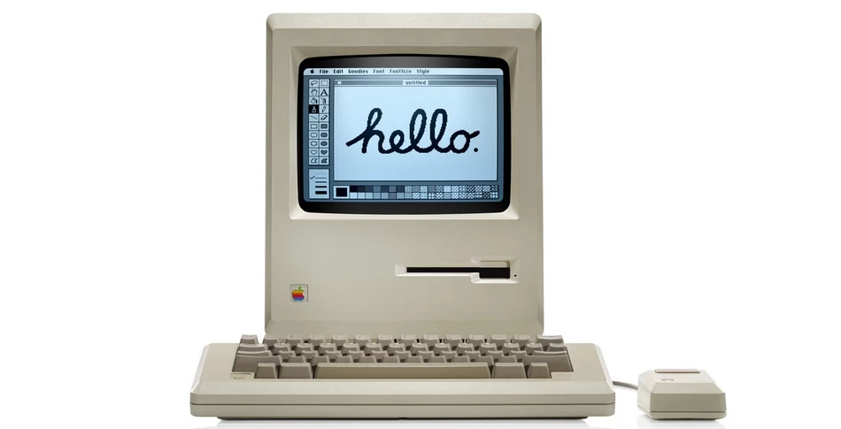

Prof. Me. Gustavo Ferreira Palma
Pauta
- Da máquina programável às interfaces gráficas
- CLI, GUI e WIMP
- Windows 1.x, 3.x e 95
- Desktop Environments no Linux
- Design visual, temas e Design Systems
Interface e Usabilidade
- A interface é o meio de interação entre usuário e sistema. Além disso pode ser o meio de comunicação entre
sistemas ou ainda um meio físico para a comunicação de doferentes sistemas eletroeletrônicos.
- Através das interfaces, o usuário expressa intenções e recebe respostas.
- Diferentes interfaces podem oferecer acesso às mesmas funcionalidades.
- O projeto deve considerar usuário, tarefa e contexto.
- Interface bonita não significa necessariamente interface fácil de usar.
Interface e Usabilidade : Como damos instruções a uma máquina?
- Uma interface não precisa ser uma tela.
- Ao longo da história, pessoas utilizaram mecanismos físicos, linguagens, terminais e elementos gráficos
para comunicar intenções às máquinas.
- A pergunta fundamental permanece: como a pessoa comunica sua intenção e como a máquina comunica seu
estado?
Interface e Usabilidade: Tear de Jacquard — início do século XIX
- Cartões perfurados controlavam quais fios seriam elevados em cada linha do tecido.
- Alterar os cartões permitia alterar o padrão sem reconstruir a máquina.
- O comportamento da máquina passa a ser determinado por informação fornecida externamente.

Tear de Jacquard

Cartões perfurados
Interface e Usabilidade: Tear de Jacquard — início do século XIX
Interface e Usabilidade: A máquina que podia ser programada
- Cartões, carregavam as instruções, às máquinas processavam, tinhámos o resultado
- O usuário não modifica a estrutura da máquina: modifica as instruções fornecidas a ela.
- Charles Babbage reconheceu o potencial dos cartões perfurados para controlar máquinas de computação.
Interface e Usabilidade: Cartões perfurados e processamento de dados
- No final do século XIX, Herman Hollerith utilizou cartões perfurados para processamento de dados do censo.
- Posteriormente, cartões tornaram-se uma forma importante de entrada de programas e dados.
- Interface ≠ interface gráfica.
Interface e Usabilidade: Batch Processing (processamento em lotes)
- Programar (pode ser em FORTRAN), perfurar os cartões, carregar os programas/dados, aguardar o processametno, receber resultado.
- A interação não era imediata.
- Entre a entrada e a saída, o intervalo podia variar de minutos a dias.
- Encontrar um erro significava iniciar novamente parte do processo.

Interface e Usabilidade: Apollo Guidance Computer
- Na década de 1960, computadores passaram a desempenhar funções críticas de navegação, orientação e
controle.
- Na Apollo, o computador precisava ser compacto, confiável e utilizável dentro de uma espaçonave.
- A interface torna-se parte de um sistema crítico.

Interface e Usabilidade: Software literalmente costurado
- Grande parte do software do Apollo Guidance Computer era armazenada em Core Rope Memory.
- Fios eram tecidos através ou ao redor de núcleos magnéticos para codificar informação.
- Era uma memória somente de leitura compacta e robusta para a época.

Interface e Usabilidade: DSKY — Display and Keyboard
- A tripulação interagia com o computador por meio do DSKY.
- A interação utilizava códigos numéricos organizados em VERB + NOUN.
- VERB: ação desejada.
- NOUN: objeto ou dado sobre o qual a ação seria realizada.

Interface e Usabilidade: A interface como linguagem
- Usuário → Linguagem de interação → Interface → Sistema
- O usuário precisa aprender quais operações existem e como expressá-las.
- Ainda estamos longe da GUI moderna, mas já estamos claramente falando de Interação Humano–Computador.
Interface e Usabilidade: Terminais interativos
- A relação muda de Entrada → Espera → Resultado para um diálogo contínuo.
- Entrada → Resposta → Entrada → Resposta
- O feedback passa a ocorrer durante a utilização do sistema.
- Interatividade transforma a experiência de uso.
Interface e Usabilidade: CLI — Command-Line Interface
- A interação ocorre principalmente por comandos textuais.
- Comandos possuem sintaxe e parâmetros específicos.
- Uma interface pequena pode oferecer enorme quantidade de funcionalidades.
- É extremamente eficiente para usuários experientes, mas exige aprendizado da linguagem do sistema.
C:\> DIR
C:\> CD DOCUMENTOS
C:\DOCUMENTOS> COPY TRABALHO.TXT A:
Interface e Usabilidade: CLI é uma interface ruim?
- Não necessariamente.
- Usabilidade depende do usuário, objetivo, tarefa, ambiente e conhecimento prévio.
- Para determinadas tarefas, uma CLI pode ser mais rápida e eficiente que uma GUI.
- Usabilidade não é uma propriedade absoluta da interface.
Interface e Usabilidade: Recordar × Reconhecer
- Na CLI, frequentemente precisamos recordar comandos e sintaxe.
- Na GUI, o sistema pode apresentar possibilidades visualmente.
- Reconhecer geralmente exige menor esforço cognitivo do que recordar.
- Menor esforço cognitivo não significa maior eficiência em todas as situações.
Interface e Usabilidade: Xerox Alto — 1973
- Display bitmap, teclado, mouse, rede e uma interface visual no mesmo sistema.
- Janelas, menus e manipulação direta ajudaram a mudar a relação entre pessoas e computadores.
- O foco começa a migrar de aprender detalhes da máquina para utilizar a máquina como ferramenta.

Interface e Usabilidade: Manipulação Direta
- Objetos tornam-se visíveis e manipuláveis.
- Selecionar, arrastar, soltar.
- Ações incrementais e feedback imediato reduzem a distância entre intenção e resultado.
- O computador começa a adaptar sua linguagem ao usuário.
Interface e Usabilidade: Metáforas de Interface
- Desktop = mesa de trabalho
- Folder = pasta
- Document = documento
- Trash/Recycle Bin = lixeira
- Clipboard = área de transferência
- Conhecimentos do mundo físico ajudam a compreender conceitos computacionais abstratos.
Interface e Usabilidade: GUI — Graphical User Interface
- Elementos gráficos representam informações, objetos e ações.
- Janelas, ícones, botões, menus, caixas de diálogo, ponteiros e barras de ferramentas.
- A GUI favorece descoberta, reconhecimento e manipulação direta.
Interface e Usabilidade: WIMP
- Windows — Janelas: organizam aplicações e documentos.
- Icons — Ícones: representam objetos, aplicações e ações.
- Menus — Menus: apresentam ações disponíveis.
- Pointer — Ponteiro: permite selecionar e manipular elementos.
- WIMP tornou-se uma linguagem fundamental das interfaces desktop.

Interface e Usabilidade: Apple Lisa e Macintosh
- Lisa (1983) e Macintosh (1984) ajudaram a levar interfaces gráficas ao usuário de computadores pessoais.
- Desktop, arquivos, pastas, lixeira, menus, mouse e janelas passam a formar uma linguagem visual
relativamente consistente.
- A GUI deixa o laboratório e entra no mercado.

Interface e Usabilidade: Microsoft Windows 1.01 — 1985
- Ambiente gráfico executado sobre o MS-DOS.
- Mouse, janelas, menus, aplicações gráficas, barras de rolagem e caixas de diálogo.
- Muitas convenções atuais ainda estavam sendo estabelecidas.
- DEMONSTRAÇÃO: usar o sistema real na VM.
Interface e Usabilidade: Windows 1.x — Tiled Windows
- As janelas normais são organizadas lado a lado, sem livre sobreposição.
- Isso evidencia que convenções hoje consideradas óbvias foram experimentadas e refinadas.
- Pergunta para a turma: quais ações são evidentes para um usuário atual?
Interface e Usabilidade: Experimento — Windows 1.01
- Como iniciar uma aplicação?
- Como identificar a aplicação ativa?
- Como alternar entre aplicações?
- Como redimensionar uma janela?
- Como fechar uma aplicação?
- O que o sistema comunica bem? O que exige aprendizado?
Interface e Usabilidade: Experimento Windows 3.1 / 3.11
- Program Manager e File Manager.
- Janelas sobrepostas e ícones mais elaborados.
- Maior utilização de cores e organização visual.
- Maior consistência entre aplicações.
- DEMONSTRAÇÃO: repetir as mesmas tarefas feitas no Windows 1.01.
Interface e Usabilidade: Consistência
- Cada aplicação deve inventar sua própria forma de interação?
- Padrões permitem transferir conhecimento entre aplicações.
- "File, Open, File, Save File, Exit".
- Consistência reduz reaprendizado e cria expectativas.
Interface e Usabilidade: Consistência cria expectativas
- Se parece um botão, esperamos que possa ser pressionado.
- Se vemos uma lupa, esperamos uma função de busca.
- Se um texto está sublinhado na Web, esperamos um link.
- Interfaces consistentes aproveitam conhecimentos adquiridos anteriormente.
Interface e Usabilidade: Experimento Windows 95 — 1995
- Menu Iniciar, barra de tarefas, área de trabalho e Explorer.
- Aplicações abertas tornam-se mais visíveis na barra de tarefas.
- Minimizar, maximizar e fechar consolidam-se como convenções familiares.
- DEMONSTRAÇÃO: um usuário atual ainda reconhece essa linguagem de interação?
Interface e Usabilidade: Um botão chamado Iniciar
- Um ponto explícito para começar.
- Executar programas, localizar documentos, alterar configurações, obter ajuda e desligar o computador.
- Um único elemento oferece um ponto de entrada claramente identificável para o sistema.
Interface e Usabilidade: Visibilidade do estado do sistema
- A barra de tarefas ajuda a responder: “O que está aberto neste momento?”
- O sistema deve manter o usuário informado sobre seu estado.
- Feedback e visibilidade reduzem incerteza durante a interação.
Interface e Usabilidade: Quarenta anos de evolução
- Windows 1.x, Windows 3.x, Windows 95, interfaces atuais
- O que mudou?
- O que permaneceu?
- Por que alguém que nunca usou Windows 95 ainda consegue reconhecer grande parte de sua interface?
Interface e Usabilidade: Linux tem uma interface gráfica?
- Não existe uma única resposta.
- Sistemas Linux podem utilizar diferentes Desktop Environments.
- O sistema operacional e a experiência gráfica não são exatamente a mesma coisa.
- Mesmo sistema, diferentes experiências de interação.
Interface e Usabilidade: Desktop Environments
- GNOME — foco em atividades, simplicidade e redução de elementos visuais.
- KDE Plasma — grande quantidade de recursos e personalização.
- XFCE — abordagem tradicional, leve e relativamente simples.
- Outros exemplos: Cinnamon, MATE e LXQt.
Interface e Usabilidade: Do funcional para o visual
- Duas interfaces podem oferecer exatamente as mesmas funcionalidades e produzir experiências diferentes.
- Design visual ajuda a comunicar importância, agrupamento, ação e estado.
- Design visual não é apenas decoração.
Interface e Usabilidade: Elementos do Design Visual
- Cor
- Tipografia
- Tamanho
- Espaçamento
- Alinhamento
- Forma
- Contraste
- Hierarquia
- Agrupamento
Interface e Usabilidade: Hierarquia Visual
- Nem todos os elementos são percebidos com a mesma importância.
- Tamanho, peso, cor, contraste, posição e espaçamento direcionam a atenção.
- A hierarquia visual deve acompanhar a importância e o significado das ações.
Interface e Usabilidade: Espaço também é informação
- Espaços vazios podem indicar separação, agrupamento, hierarquia e mudança de contexto.
- Elementos próximos tendem a ser percebidos como relacionados.
- Elementos distantes tendem a ser percebidos como grupos diferentes.
- Gancho: princípios de Gestalt.
Interface e Usabilidade: Cor não é apenas decoração
- Pode criar identidade, estabelecer hierarquia, destacar ações, comunicar estados e fornecer feedback.
- Cores semânticas são comuns para erro, atenção e sucesso.
- Nunca depender exclusivamente da cor para transmitir uma informação.
- Gancho: acessibilidade.
Interface e Usabilidade: Paleta e Contraste
- Uma aplicação utiliza um conjunto limitado e planejado de cores.
- Cores principais, secundárias, superfícies, texto e cores semânticas.
- Contraste adequado é essencial para legibilidade, hierarquia e acessibilidade.
- O objetivo não é usar muitas cores, mas usá-las consistentemente.
Interface e Usabilidade: Tipografia também é interface
- Tipografia influencia legibilidade, hierarquia, identidade e densidade de informação.
- Título, subtítulo, corpo e legenda formam níveis de informação.
- A hierarquia pode ser construída variando tamanho, peso, espaçamento e cor.
- Consistência costuma ser mais importante que variedade.
Interface e Usabilidade: Temas e Componentes
- Um tema reúne decisões compartilhadas de cor, tipografia, formas e aparência.
- Light/Dark não é simplesmente inverter preto e branco.
- Componentes reutilizáveis possuem aparência, comportamento e estados.
- Normal, hover, focused, pressed e disabled comunicam feedback.
Interface e Usabilidade: Design Systems
- Cores + Tipografia + Espaçamento + Formas + Componentes + Comportamentos.
- Um Design System torna decisões de design consistentes e reutilizáveis.
- O objetivo não é apenas fazer interfaces parecidas: é compartilhar uma linguagem de produto.
- Essa ideia aparece diretamente em frameworks modernos e no Material Design.
OBRIGADO!
Podem me encontrar aqui:
- gustavo.palma@unisal.edu.br
- www.gustavopalma.com.br